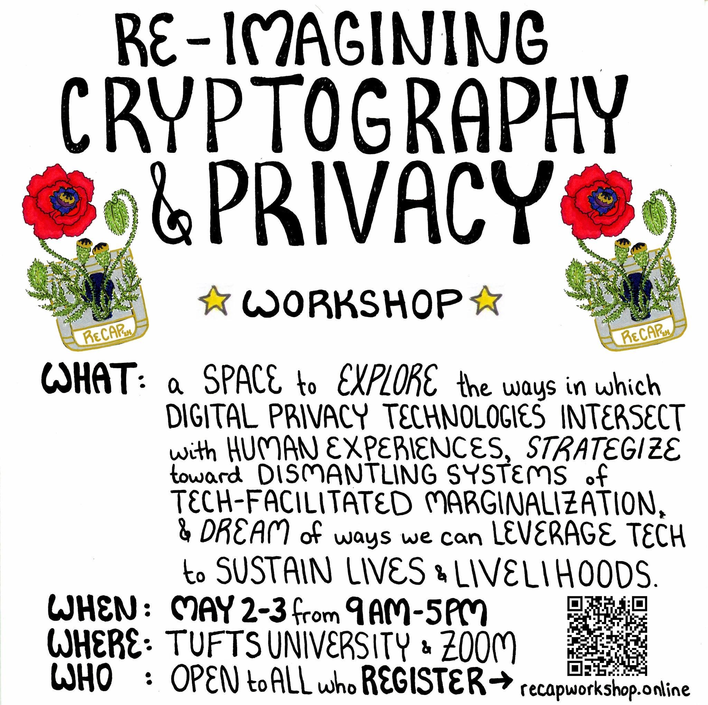

ReCAP 2024
ReCAP 2024 is a hybrid workshop from May 2-3, 2024 that will take place physically at Tufts University in Medford, Massachusetts (USA) and virtually on Zoom. The workshop itself is free but we unfortunately we do not have travel stipends available for physical attendance this year and hope to secure funding in the future.
Contributions
Please find the list of contributions organized by session topic below. For contributions from multiple individuals, the speaker's name is underlined. When provided, we have added additional links for speakers. The accompanying abstracts are available here.
- Cryptography and Privacy in Context: Cryptography and privacy have deep and under-explored historical, social, political, environmental, psychological, emotional, and spiritual dimensions. The art of hiding and communicating private information in plain sight has persisted throughout the social, political, and spiritual histories of people. This session creates space for the presentation and discussion of histories, stories, artifacts, reflections, and ideas related to the many dimensions of cryptography and privacy.
- Surveillance and Systems of Marginalization: This session centers forms of surveillance explicitly wielded against marginalized people: the surveillance systems of police, local law enforcement, and domestic federal agencies such as the United States' Federal Bureau of Investigation (FBI) and Immigration and Customs Enforcement (ICE), intimate partner, family, and peer surveillance, and the surveillance technologies deployed in school, healthcare, and welfare systems. Work in this session might document, discuss, or develop new analysis at the intersections of surveillance and systems of marginalization.
- Cryptography and Privacy for the People: How do we think about, talk about, design, build, and sustain cryptography and privacy tools that meet the needs of individuals and groups of people who are the most vulnerable to surveillance and marginalization? How might existing practices of threat modeling and protocol design in cryptography and privacy flatten, miss, or undermine their needs? This session will consider the lived privacy needs and practices of marginalized people, as well as mechanisms for co-creating cryptography and privacy tools that reflect these needs and practices.
- Cryptography and Privacy in the Margins: This session will create space for acknowledging and confronting the difficulties that people with certain intersections of identity experience in the field of cryptography and privacy, and conversely, acknowledging and confronting the power that people with opposing intersections of identity hold over decision-making in the field. It will center conversations surrounding challenges, new perspectives, and action steps toward not only equity of access and representation, but also toward direct input, influence, and impact of marginalized voices at the highest levels of decision-making in the field.
- Cryptography, Privacy, and Creative Expression: This session will be dedicated to all forms of creative expression (multi-media art, music, song, dance, poetry and creative writing, performance, etc.) produced and enjoyed by people in the cryptography and privacy community.
- (Meta Topic) Dreaming and Design: This meta session will set aside time
to discuss the theory and practice of community-driven work, as well as to develop explicit
processes around co-ideation and co-design in cryptography and privacy. What does "for the
people" and "community" mean in our context? What does it mean and look like for the theory
and practice of cryptography and privacy to be "community-driven"? What does the ideation and
design process of "cryptography for the people" look like? Session participants might
highlight, unpack, and analyze particular positive examples of co-design, or take a
"big-picture" approach to imagining what this process could look like in an ideal world.
Contribution Title Contributor(s) Saying NO! to Workplace Surveillance: Lessons from Cybersecurity and Privacy Institute Lisa Oakley, xenia dragon, Eysa Lee You Still See Me: How Data Protection Supports the Architecture of ML Surveillance Rui-Jie Yew, Lucy Qin, Suresh Venkatasubramanian Where Are the Vicious Vandals of Yesteryear? William M. Fleischman What you don't build can't teach you Nick Mathewson
| Contribution Title | Contributor(s) |
|---|---|
| Criptolatino: the community of Latin-American cryptographers | Arantxa Zapico, Daniel Escudero, Octavio Perez Kempner, Abdelraham Aly, Sofia Celi |
| Interfaces for Data Consent | Riley Wong, Val Elefante |
| Cryptography for the People: Protecting marginalised groups from mass surveillance | Anna Storli Tveit, Katrien De Moor |
| Contribution Title | Contributor(s) | “Get a PhD”: from idea to song, and how to use your art for communicating your ideas | Daniel Escudero |
|---|---|
| crypto_doodles: cryptography through comics and jokes | Eysa Lee |
| 29°S, 71°W | Jack Doerner, Sandy Williams IV |
| Cryptographic metaphors | Ying Tong Lai |
Schedule
All times are listed in EST (UTC-4).Thursday (May 2, 2024)
Friday (May 3, 2024)
Flyer
Feel free to share the ReCAP flyer with others! Contact Organizers
- General Inquiries: recapworkshop@protonmail.com
- Alishah Chator, Boston University
- Seny Kamara, Brown University and MongoDB
- Lucy Qin, Georgetown University
- Leah Namisa Rosenbloom, Northeastern University